食欲の春 [梅吉]
冷蔵庫からおやつが出てくる気配を察すると光よりも早くやってくるこの方。
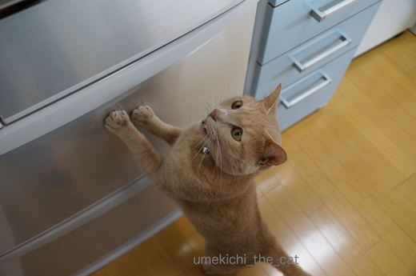
なんでそんなにお腹が空くんでしょうね梅吉さんは。
まだまだ成長期？
そろそろ２歳になるってことは人間でいうと２1〜３歳くらいよね。
大学生ってところかな。
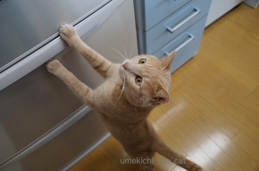
その頃の友人にはチャーハンをおかずに白飯を食べている人がいましたよ。
壮絶な満腹感を得られるのが良いのだとか・・・
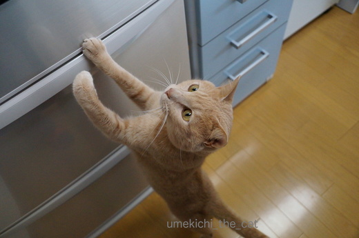
梅吉さんもそんな感じよね〜。
![[猫]](https://blog.ss-blog.jp/_images_e/101.gif) ごちゃごちゃいうとらんと、はようっ！
ごちゃごちゃいうとらんと、はようっ！
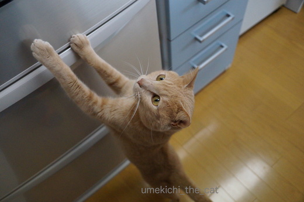
もうちょっとてをのばせば・・・・
この後冷蔵庫のヘリに爪を引っ掛けて懸垂状態に。
そのまま中に入って行こうとしたので撮影続行不可でした〜( ꒪⌓꒪)
春夏秋冬年間を通じて食欲はとどまるところを知りません・・・
ダイエット成功後フードの量は少し増量。
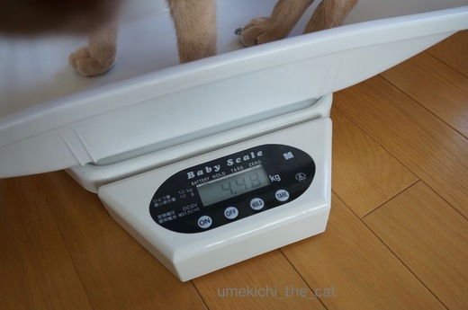
それでも体重はリバウンドもせず良い感じをキープしています。
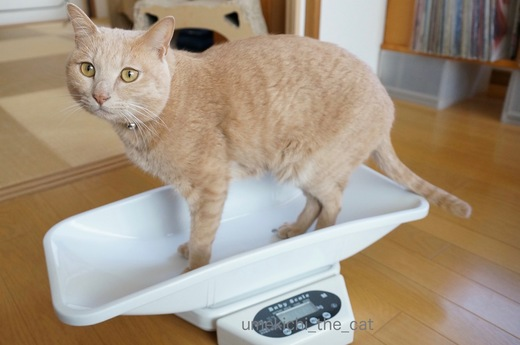
どやっ![[ぴかぴか（新しい）]](https://blog.ss-blog.jp/_images_e/150.gif)
 ↑ガブッと一押し↑
↑ガブッと一押し↑
ベランダの食客のみなさん。
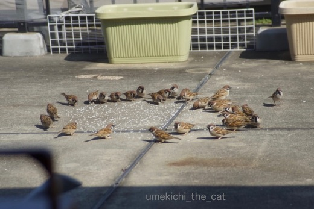
ある時は円陣を
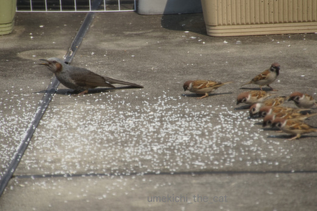
ある時はひよ隊長を先頭に整列！
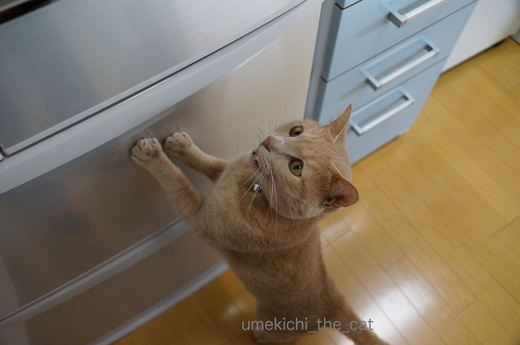
なんでそんなにお腹が空くんでしょうね梅吉さんは。
まだまだ成長期？
そろそろ２歳になるってことは人間でいうと２1〜３歳くらいよね。
大学生ってところかな。
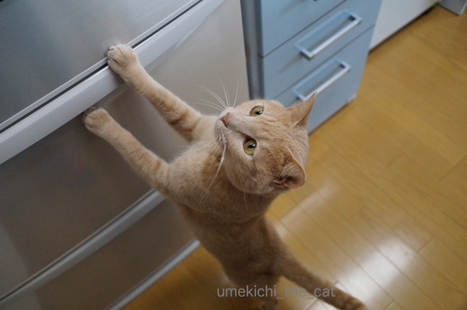
その頃の友人にはチャーハンをおかずに白飯を食べている人がいましたよ。
壮絶な満腹感を得られるのが良いのだとか・・・
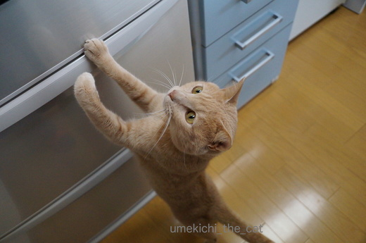
梅吉さんもそんな感じよね〜。
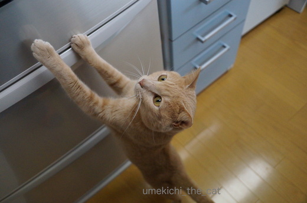
この後冷蔵庫のヘリに爪を引っ掛けて懸垂状態に。
そのまま中に入って行こうとしたので撮影続行不可でした〜( ꒪⌓꒪)
春夏秋冬年間を通じて食欲はとどまるところを知りません・・・
ダイエット成功後フードの量は少し増量。
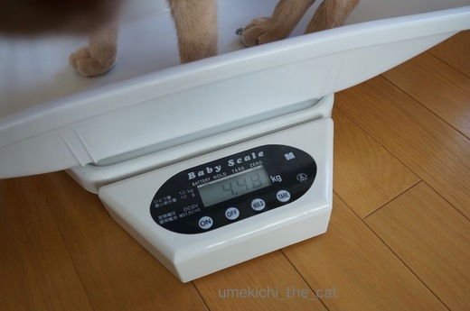
それでも体重はリバウンドもせず良い感じをキープしています。
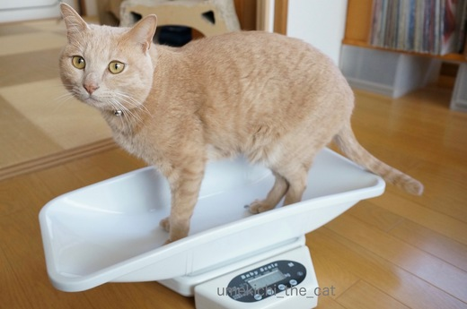
ベランダの食客のみなさん。
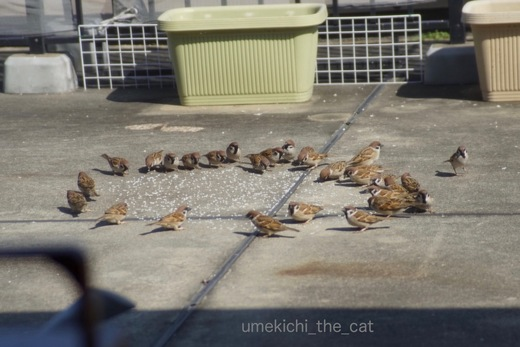
ある時は円陣を
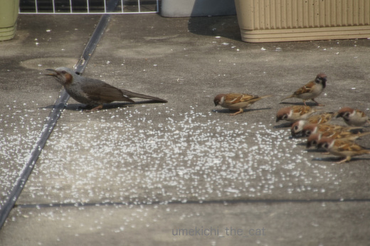
ある時はひよ隊長を先頭に整列！

カフェオレ色の梅吉

梅吉 2023年8月10日 永眠


梅吉と出会った譲渡会

犬猫の理由なき殺処分ゼロ
妄想広告
UMEKICHI 光

爆発的に早い！
時々攻撃的！
Thanks to Mr.Boss365
爆発的に早い！
時々攻撃的！
Thanks to Mr.Boss365

どんどん手が伸びていますねぇ～♪
食欲があることはいいことですもんね(#^.^#)
by きぃ (2017-03-29 19:23)
梅吉さん、食欲もあって体重も現状キープで
体調万全ですね。^^)
スズメの円陣、初めて見たかも。すごい。^^;
by yes_hama (2017-03-29 21:27)
梅吉さん、体重計の上でおすましですね。
2歳でしたか。
おやつも遊びも楽しい時期でしょうね。
雀の円陣も横並びの整列も初めて見ました（笑）
小さな生き物は可愛いですね。
by kiki (2017-03-29 21:40)
食べてくれないよりずっといい、そう呪文を唱えながらがっつき王子にご飯をあげ続けて５年、まったく食欲変わりません^^;
もうええオッサンやのに・・・(-_-メ)
梅吉さん、手足もお尻尾もスラリと長くてモデル体型ですね(^_-)-☆
by ゆきち (2017-03-29 22:26)
梅吉さんちゃんと体重計に乗れてエライ!
ベスト体重で絶好調!!
雀の学校にヒヨドリの先生?こんなの初めて見ました。
by zombiekong (2017-03-29 22:44)
梅吉さん、2歳だったんですね！！
ちょっとびっくりしました。
2歳で、この貫禄ｗｗ
かっこいいです!!
2歳と言うと、うちでは小雨と同い年ですね。
小雨が幼く見えるのはなぜだ？ｗ
by sumi-cyan (2017-03-29 23:58)
あはは(≧▽≦)
間違い探しかと思った〜。手の位置が変わっているのかぁ。
うちはなぜか台所は｢別にどうでもいい〜｣的な場所なんです。
どこかに登ったりもしないし、ただ通り過ぎるだけの場所…。
何でだろう…。
by も〜 (2017-03-30 08:33)
梅吉さん可愛いですね！！
沢山食べるのもいいことですが、
カロリー制限すると人も動物も
延命効果がありますので適度に
我慢すべきなのか悩ましい所です。
小鳥も可愛いですね！
確かに円陣を･･･笑
by Y.Tachi (2017-03-30 09:29)
そろそろ２歳かぁ
まだまだ食べ盛りだね！(笑)
今まではドライフードばかりあげていたんだけど
今月からウェットのゴハンも少しずつあげることにしました。
最初はイヤがってたうみちゃんも、ちょっとずつ食べるようになったけど、カリカリとパウチの併用だと体重管理は気をつけないとだよねー^^;
量がわからんｗｗ
by リュカ (2017-03-30 10:13)
春はお腹がすくんだにょ。
まろんは冷蔵庫が開いてると入ろうとします。
by じゅらまろ (2017-03-30 12:30)
梅吉さん!
「食べて寝るのがアタチの仕事だよ～!」
「ママも良く知ってるでしょ～!」と
オメメが言ってますよね～(笑)
我が家のCoCoタンもダイエットフードで
折角、減少してたのですが
奥さんが甘えさせてゴハン粒を多くしてしまい
7.5kg前後が一気に8.15kgにしてしまいました・・
by makkun (2017-03-30 13:11)
３枚目写真の梅吉さんの左手がクィっとｗ
「お母さん、撮影なんかしてないで早く～」ですね^^;
高校・大学時代は確かによく食べてたかも(^O^)
でもカロリー消費も半端なかったので太らなかったんですよねぇ(^-^)
それが今ではカロリー消費を意識しないと大変な事に(>_<)
あの頃が懐かしいｗ
by ニッキー (2017-03-30 13:58)
段々手の位置が上に行ってる～～！うちも冷蔵庫付近でカサカサ音がすると2階にいても下りてきますね。めっちゃええ耳しとるわ(*^^*)
by palpal (2017-03-30 14:43)
きぃさん＞足も胴も手も「みょ〜んっ」と力いっぱい伸ばして迫ってきていました^^;
食が細くて・・・と心配するより、「元気でありがたいと思おう！」と自分に言い聞かせていますよー。
yes_hamaさん＞よく食べるし遊ぶし寝るし・・・今の所とっても健康です。
体重だけは増やさないよう気をつけていますよ〜。
スズメの円陣、今年から突然に始まりました。
なんでだろう・・・・
kikiさん＞青春真っ盛り！箸が転がっても可笑しいお年頃でしょうか（＾◇＾）
今我が家に来ているスズメたちは、昨年うちのベランダ横の電柱から巣立って
我が家のベランダでお米を食べて大きくなった子たちと思われます。
幼馴染の集まりだからチームワークが良いのでしょうか=´ᆺ`=
ゆきちさん＞ああ・・・・梅吉もこてつくんと同じくがっつき路線を爆進しそうです^^;
食が細くて・・・とか、フードを変えたら食べなくて・・・など
面倒な手間のかからないええ子やと思うことにします。はい(ΦωΦ)
by ちぃ (2017-03-30 16:04)
zombiekongさん＞体重計は何度か降りちゃうのですが
一度乗るとじ〜っとしています。
「いがいとええやん！」とか思っていそうです＾＾
ずすめとヒヨドリは不思議な関係。
もともとはすずめの餌場にヒヨドリが乱入して来たのですが
傍若無人なひよちゃんに呆れ顔のスズメかもです^^;
sumi-cynaさん＞梅吉、貫禄ありますかっ！
一人っ子で比較対象がいないのでウチでは比べようがないからなぁ・・・
（我が家の）王様だから、ということにしておいてください＾＾
も〜さん＞ゆづ王子は台所に興味無しなんですね。
梅吉は我が家に来た当初から冷蔵庫を開けると走って来ましたよ。
保護宅で良い思いをしていたのかもしれません^^;
でも興味ない方が良いよ〜。いろいろ大変なのよ・・・涙
Y.Tachiさん＞そうなんです！
健康で長生きしてもらうために欲しがっても定量以上は与えない。
飼い主が心を鬼にすることも大切なんですよね〜。
・・・って自分では甘い物ついつい食べちゃうんですけど(*≧ｍ≦*)
リュカさん＞そうそう併用は難しい・・・
でもうみちゃんはうんPのためにも併用が良いかもね！
梅吉はドライもウェットも関係なしでがっつくよーww
じゅらまろさん＞まろたんも冷蔵庫に入るんだ〜。
時々冷やしておくと長持ち、長生きしないかなぁ・・・
梅吉も扉を開けておくとどこでも入っちゃうんですが
電子レンジの中にきっちり収まっていた時は笑ったわww
makkunさん＞そうそう＾＾
元気に食べて、寝て、出す！のが飼い主の一番の願いなのですが
何分ゴハンが好きすぎて・・・・^^;
体重管理、難しいけど頑張らなきゃ、ですよね(๑˃̵ᴗ˂̵)و
ニッキーさん＞クイッwに目を留めていただけたとは！
私はこの手に萌え萌えでしたww
ニッキーさんの場合は高校・大学時代と同じくらいのカロリーを
日々消費されていそうなんですが・・・
それほどカロリー消費しないのに
美味しそうなおやつレポについつい影響されてしまっている私は大変なことに・・・^^;
palpalさん＞ね〜( ･̆ˍ･̆ )名前を呼んでもしらんぷりなのにね〜( ･̆ˍ･̆ )
聞こえてるんだよね〜( ･̆ˍ･̆ )
by ちぃ (2017-03-30 17:46)
冷蔵庫から出てくるオヤツ…梅吉くんは何のオヤツを待ってるのかニャ？
もしかして、あんなものとか、こんなものとか！梅吉くん、贅沢してますな(どういう想像…)
うちのは缶詰を開ける音に反応します。ツナ缶とかウェットフードっぽいけど違うから！
相撲観戦されてる美男美女…拝見しましたよ！
by BillK-ko (2017-03-30 18:31)
梅吉くんも、もう大学生ですか〜
そりゃ〜、食欲も半端じゃないでしょ！
そろそろ、恋でも？？^ ^
by KENT0mg (2017-03-30 19:35)
BillK-koさん＞そうです！あんないいものこんないいもの・・・って
滅多なところに置いておくとハイエナ梅吉に発見されて食い荒らされるので
普通のマタタビ粉やグリニーズが出てきますよ。
冷蔵庫の中で邪魔やわ〜( ･̆ˍ･̆ )
あ、相撲観戦しているの映ってた？
あの福山くんと吹石さんみたいな夫婦が私たちよ！！（違うから・・(-.-;)
KENT0mgさん＞あわあわ〜梅吉から恋バナは聞いたことない！
おかーさんには話してくれないのかも〜(꒦ິ⌑꒦ີ)
by ちぃ (2017-03-31 15:45)